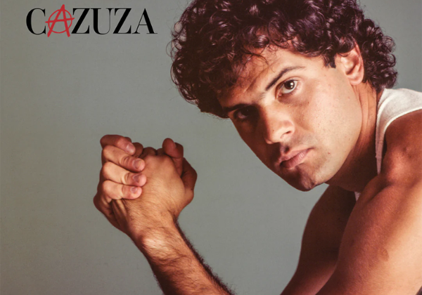
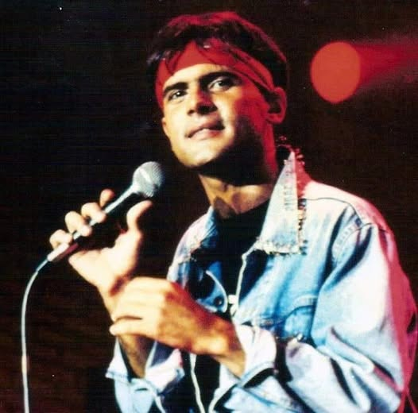

Cazuza - O tempo não para
https://youtu.be/_Jcn10Iiuu4?si=BxMdvohS-2oRzpYM
Cazuza - Exagerado
https://youtu.be/szts-5Zs5_8?si=Zg5GoQfJqwXgsq2d
Cazuza - Preciso dizer que te amo
https://youtu.be/1iBoKXZr8C0?si=yuByIJJAxvEMnFU8
Letra da musica Exagerado
Amor da minha vida
Daqui até a eternidade
Nossos destinos foram traçados
Na maternidade
Paixão cruel, desenfreada
Te trago mil rosas roubadas
Pra desculpar minhas mentiras
Minhas mancadas
Exagerado
Jogado aos teus pés
Eu sou mesmo exagerado
Adoro um amor inventado
Eu nunca mais vou respirar
Se você não me notar
Eu posso até morrer de fome
Se você não me amar
Por você eu largo tudo
Vou mendigar, roubar, matar
Até nas coisas mais banais
Pra mim é tudo ou nunca mais
Exagerado
Jogado aos teus pés
Eu sou mesmo exagerado
Adoro um amor inventado
E por você eu largo tudo
Carreira, dinheiro, canudo
Até nas coisas mais banais
Até nas coisas mais banais
Exagerado
Jogado aos teus pés
Eu sou mesmo exagerado
Adoro um amor inventado
Jogado aos teus pés
Com mil rosas roubadas, exagerado
Eu adoro um amor inventado
Jogado aos teus pés, baby, baby
Eu sou mesmo exagerado
Adoro um amor inventado.